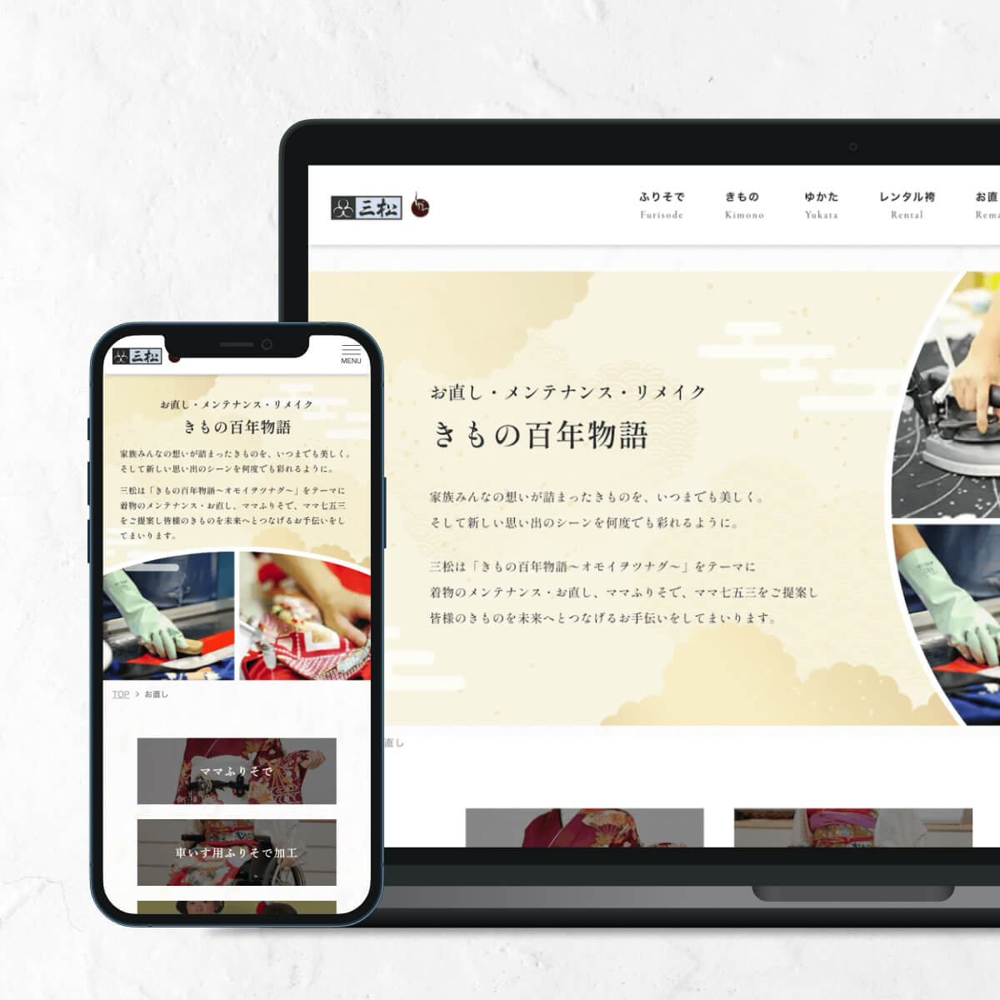
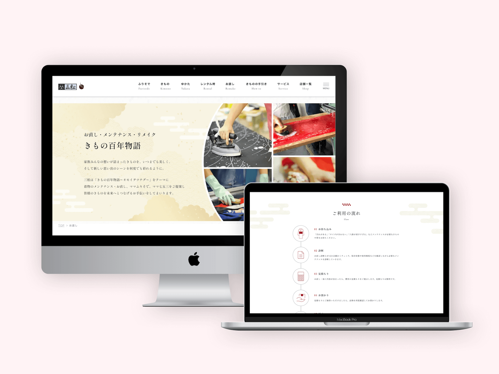
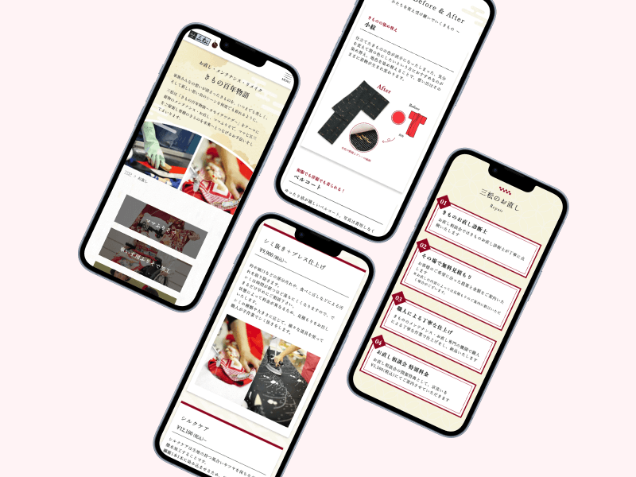
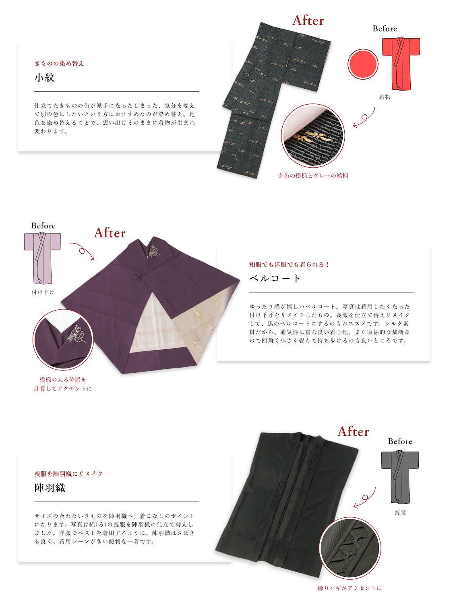

✴︎ 背景と役割
背景
既存ブランドサイト内に、「着物のお直し」サービスを専門的に紹介するページが必要とされていました。
年齢層を限定せず、着物を長く大切に着たいと考える人に向けて、サービス内容と価値を1ページで完結して訴求することが求められていました。
自分の役割
既存のブランドトーンを踏襲しつつ、来店予約まで自然につながるLP型の構成・デザイン設計を担当しました。
✴︎ 設計方針
1. 任せられる安心感を伝える
- 落ち着きと信頼感のあるトーンで統一
- 余白を十分に取り、情報過多にならないレイアウト設計
- 写真を効果的に配置し、「大切な着物を預けられる」印象を与える
2. サービス内容と効果の理解を促す
- スクロールに沿って理解が深まるよう、情報の出し順を整理
- Before / After で、視覚的にお直し内容が伝わる構成
✴︎ デザイン
ビジュアルトーン
- 和のテイストを基調
- 明朝体を使用し、上品で落ち着いた印象に
- 情報量が多くなりすぎないよう、余白を重視


Before / After 表現
クライアントから「お直しのビフォーアフターを見せたい」という要望がありましたが、After写真のみ提供でBefore写真は存在しない、という制約がありました。
そのため、
- Before側はイラストで表現
- 写真とイラストが並んでも不自然にならないよう、サイズ・配置・余白を調整
視覚的に違和感なく、魅力が伝わる表現を意識しました。

✴︎ 実装
- レスポンシブ対応
✴︎ 振り返り
- 制約のある素材条件下でも、Before / After の比較が直感的に伝わる構成を実現できました。
- 下層ページであっても、構成と見せ方次第で十分にユーザー体験を設計できると感じました。